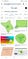
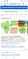

Link keywords neighborhood in search algorithms

A link is like an object in an environment which is a crowd of other objects. In the case of such internet links the objects are simply words. As we use to say that environment defines people and culture, we can also say that environment defines links and meanings. To shortly say that the keywords that matter for a given link are the keywords that are in the neighborhood of this link. far a keyword is positioned from a link, less it will be considered as relevant by the link weighting algorithms. that’s this neighborhood of keywords that will be taken into account by the search engine algorithm to know if the content this link is pointing to is relevant and logical. because the more this set of keywords that constitutes the neighborhood of the link is in the same topic or universe of the keywords that are in the target content the more the link is relevant. The keywords that begin the target content play a more important role in the scoring of the link than the keywords that are at the end of the content. It helps to know about and have a mathematical background in sets theory and how to translate all these concepts into a probability distribution that will be the input of the link scoring system of the search engine algorithm. Designing and developing a search engine algorithm is an interesting science that involves mathematics and natural language processing. Of course, it does, and don't forget that Larry and Sergey were studying books referencing as their PhD subject in Mathematics when they came up with the idea of Google.
we still can build better search engines so try to understand them and see how we can improve them using concepts like this.

